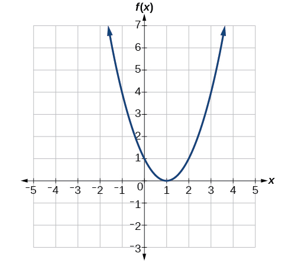
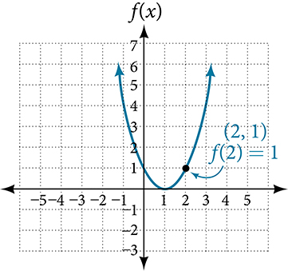
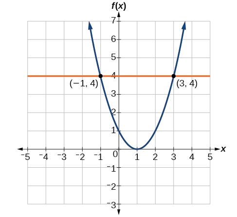

ماخذ دا ترجمہ: OpenStax Precalculus 2e, §1.1 دا چُنیا ہویا حصہ؛ پورے حصے دا ترجمہ نہیں۔
فارمولیاں دی شکل وچ دِتے فنکشناں دیاں قدراں کڈھنا
کجھ فنکشناں دی تعریف ریاضی دے قاعدیاں یا طریقیاں نال کیتی جاندی اے، جیہڑے مساوات دی شکل وچ لکھے ہوندے نیں۔ جے فنکشن دی آؤٹ پُٹ نوں ایسے اک فارمولے نال لکھنا ممکن ہووے جیہدے وچ اِن پُٹ دی مقدار ہووے، تاں اسیں فنکشن دی تعریف الجبرا دی شکل وچ کر سکدے آں۔ مثال لئی، مساوات ، تے دے وچکار فنکشن والا تعلق وکھاندی اے۔ اسیں ایہنوں دوبارہ لکھ کے طے کر سکدے آں کہ ، دا فنکشن اے یا نہیں۔
حل کیتی مثال 9
فنکشن دی جبری شکل لبھنا
جے ممکن ہووے، تاں تعلق نوں فنکشن دی شکل وچ لکھو۔
حل
تعلق نوں ایس شکل وچ لکھن لئی سانوں ایہنوں اِنج لکھ سکنا چاہیدا اے کہ ، دا فنکشن ہووے؛ یعنی ایہنوں دی شکل وچ لکھنا اے۔
ایس لئی، نوں دے فنکشن دے طور اُتے اِنج لکھیا جاندا اے:
حل کیتی مثال 10
دائرے دی مساوات نوں فنکشن دی شکل وچ لکھنا
کی مساوات ، نوں اِن پُٹ تے نوں آؤٹ پُٹ من کے، اک فنکشن وکھاندی اے؟ جے ہاں، تاں تعلق نوں فنکشن دی شکل وچ لکھو۔
حل
پہلاں اسیں دوہاں پاسیاں وچوں گھٹاندے آں۔
ہُن اسیں ایس مساوات نوں لئی حل کرن دی کوشش کردے آں۔
سانوں اِکّو اِن پُٹ نال جُڑیاں دو آؤٹ پُٹ قدراں ملدیاں نیں، ایس لئی ایہہ تعلق اک اکلوتے فنکشن دی شکل وچ نہیں لکھیا جا سکدا۔
جدول وچ دِتے فنکشن دی قدر کڈھنا
جیویں اسیں اُتّے ویکھیا اے، فنکشناں نوں جدولاں وچ وکھایا جا سکدا اے۔ اُلٹے پاسے، اسیں جدولاں دی معلومات توں فنکشن لکھ سکدے آں تے جدولاں نال اوہناں دیاں قدراں وی کڈھ سکدے آں۔ مثال لئی، ساڈے پالتو جانور ساڈے نال گزارے خوشگوار پل کِنّے چنگے یاد رکھدے نیں؟ اک عام مشہور کہانی اے کہ سنہری مچھلی دی یاد صرف 3 سیکنڈ رہندی اے، پر ایہہ صرف افسانہ اے۔ سنہری مچھلی 3 مہینیاں تیکر یاد رکھ سکدی اے، جد کہ بیٹا مچھلی دی یاد 5 مہینیاں تیکر رہندی اے۔ کتے دے بچے دی یاد دا دورانیہ 30 سیکنڈ توں ودھ نہیں ہوندا، پر بالغ کتا 5 منٹ تیکر یاد رکھ سکدا اے۔ بلی دے مقابلے وچ ایہہ بہت تھوڑا اے؛ بلی دی یاد 16 گھنٹے رہندی اے۔
پالتو جانور دی قسم نوں اوہدی یاد دے دورانیے نال جوڑن والا فنکشن، جدول نال ہور سوکھا ویکھیا جا سکدا اے۔ جدول 1.1.10 ویکھو۔1
| پالتو جانور | یاد دا دورانیہ، گھنٹیاں وچ |
|---|---|
| کتے دا بچہ | 0.008 |
| بالغ کتا | 0.083 |
| بلی | 16 |
| سنہری مچھلی | 2160 |
| بیٹا مچھلی | 3600 |
کدی کدی فنکشن دی قدر جدول توں کڈھنی، مساواتاں ورتن توں ودھ کم دی ہو سکدی اے۔ ایتھے ایس فنکشن نوں آکھ لئیے۔ فنکشن دا ڈومین پالتو جانور دی قسم اے، تے رینج اک حقیقی عدد اے جیہڑا اوہ گھنٹے وکھاندا اے جِنّے چِر جانور دی یاد رہندی اے۔ اسیں فنکشن دی قدر اِن پُٹ «سنہری مچھلی» اُتے کڈھ سکدے آں۔ اسیں لکھاں گے۔ چیتے رکھو کہ جدول دی شکل وچ فنکشن دی قدر کڈھن لئی اسیں جدول دی متعلقہ قطار توں اِن پُٹ قدر تے اوہدی جُڑی آؤٹ پُٹ قدر لبھدے آں۔ فنکشن لئی جدول دی شکل بہت ڈھکدی لگدی اے، پیراگراف یا فنکشن دی شکل وچ لکھن نالوں وی ودھ۔
حل کیتی مثال 11
جدول والے فنکشن دی قدر کڈھنا تے اوہدی مساوات حل کرنا
جدول 1.1.11 ورت کے،
- (a) دی قدر کڈھو۔
- (b) نوں حل کرو۔
| 1 | 2 | 3 | 4 | 5 | |
| 8 | 6 | 7 | 6 | 8 |
حل
- (a) دی قدر کڈھن دا مطلب فنکشن دی آؤٹ پُٹ قدر، اِن پُٹ قدر لئی لبھنا اے۔ جدول وچ نال جُڑی آؤٹ پُٹ قدر 7 اے، ایس لئی اے۔
- (b) نوں حل کرن دا مطلب اوہ اِن پُٹ قدراں، ، لبھنا اے جیہڑیاں 6 دی آؤٹ پُٹ دیندیاں نیں۔ تھلّے دِتی جدول دو حل وکھاندی اے: تے ۔
| 1 | 2 | 3 | 4 | 5 | |
| 8 | 6 | 7 | 6 | 8 |
جدوں اسیں فنکشن وچ اِن پُٹ 2 دیندے آں، تاں ساڈی آؤٹ پُٹ 6 ہوندی اے۔ جدوں فنکشن وچ اِن پُٹ 4 دیندے آں، تاں ساڈی آؤٹ پُٹ وی 6 ہوندی اے۔
گراف توں فنکشن دیاں قدراں لبھنا
گراف نال فنکشن دی قدر کڈھن لئی وی دِتی اِن پُٹ نال جُڑی آؤٹ پُٹ قدر لبھنی پیندی اے؛ فرق ایہہ اے کہ ایتھے اسیں گراف ویکھ کے آؤٹ پُٹ لبھدے آں۔ گراف نال فنکشن دی مساوات حل کرن لئی گراف اُتے اوہ ساریاں تھاواں لبھدے آں جتھے دِتی آؤٹ پُٹ قدر ملدی اے، تے اوہناں نال جُڑی اِن پُٹ قدر یا قدراں ویکھدے آں۔
حل کیتی مثال 12
گراف توں فنکشن دیاں قدراں پڑھنا
شکل 1.1.7 وچ دِتا گراف ورت کے،
- (a) دی قدر کڈھو۔
- (b) نوں حل کرو۔

چھوٹی سکرین اُتے پوری شکل ویکھن لئی پاسے سرکاؤ، یا اصل شکل وکھری کھولو۔
{kind=link}
ایس شکل دے ماخذ والے متبادل متن بارے ساڈی وکھری درستی تے وضاحت وی ویکھو۔
حل
- (a) دی قدر کڈھن لئی منحنی اُتے اوہ نقطہ لبھو جتھے اے، تے فیر اوس نقطے دا y-محدد پڑھو۔ نقطے دے محدد نیں، ایس لئی اے۔ شکل 1.1.8 ویکھو۔

چھوٹی سکرین اُتے پوری شکل ویکھن لئی پاسے سرکاؤ، یا اصل شکل وکھری کھولو۔
ایس شکل دے ماخذ والے متبادل متن بارے ساڈی وکھری درستی تے وضاحت وی ویکھو۔
- (b) نوں حل کرن لئی اسیں عمودی محور اُتے آؤٹ پُٹ قدر لبھدے آں۔ لکیر دے نال افقی پاسے چلدے ہوئے سانوں منحنی دے دو ایسے نقطے ملدے نیں جنہاں دی آؤٹ پُٹ قدر اے: تے ۔ ایہہ نقطے دے دو حل وکھاندے نیں: یا ۔ ایس دا مطلب اے کہ تے اے؛ یعنی جدوں اِن پُٹ یا ہووے، تاں آؤٹ پُٹ اے۔ شکل 1.1.9 ویکھو۔

چھوٹی سکرین اُتے پوری شکل ویکھن لئی پاسے سرکاؤ، یا اصل شکل وکھری کھولو۔
ایس شکل دے ماخذ والے متبادل متن بارے ساڈی وکھری درستی تے وضاحت وی ویکھو۔
{kind=link}
{kind=link}
ماخذ دے حوالے
- ماخذ: http://www.kgbanswers.com/how-long-is-a-dogs-memory-span/4221590۔ ویکھن دی تاریخ: 3/24/2014۔ متن ول واپس
فارمولے، جدولاں تے گراف — ساڈی اپنی وضاحت
ایتھوں اگے دِتیاں وضاحتاں ساڈی ولوں شامل کیتیاں نیں؛ ایہہ ماخذ دا ترجمہ نہیں۔
مساوات توں فارمولا
پہلی مثال وچ p = f(n) = 2 − n/3 اے۔ مساوات حل کردیاں دوہاں پاسیاں نوں اِکّو غیر صفر مقدار نال ضرب دینا یا تقسیم کرنا حل قائم رکھدا اے۔ صفر نال تقسیم نہیں ہو سکدی؛ صفر نال ضرب دے کے اصل مساوات دی ساری معلومات وی مِٹ سکدی اے۔ ماخذ دے عام طریقے نال ایہہ ضروری حد ساڈے ایس نوٹ وچ شامل کیتی گئی اے۔
انگریزی حساب وچ expression involving n دا مطلب n والی عبارت اے؛ Subtract 2n from both sides. دا مطلب دوہاں پاسیاں وچوں 2n گھٹاؤ؛ Divide both sides by 6 and simplify. دا مطلب دوہاں پاسیاں نوں 6 نال تقسیم کر کے سادہ کرو۔ انگریزی ہدایتاں، خالی ترتیب والے خانے تے ریاضی دی پوری لکھت اصل حساب وچ قائم نیں۔
اک مساوات، پر ضروری نہیں اک فنکشن
دائرے دی مثال وچ x² + y² = 1 لئی x = 0 رکھو: y = 1 تے y = −1 دو وکھرے جواب نیں۔ اِکّو اِن پُٹ نال ایہہ دو آؤٹ پُٹ ملنا، پورے تعلق نوں y = f(x) والا اک فنکشن منّن توں روکدا اے۔ ایہہ نہ سمجھو کہ ہر x اُتے دو وکھرے حقیقی جواب نیں: x = −1 تے x = 1 اُتے y = 0 اے، تے −1 ≤ x ≤ 1 توں باہر کوئی حقیقی جواب نہیں۔ +√(1 − x²) تے −√(1 − x²) وچوں صرف اک شاخ چُننا اک ہور، محدود تعلق بناندا اے؛ ماخذ وچ پورا دائرہ دِتا اے۔ حساب دے and دا مطلب «تے» اے۔
اگلی مشق دا جواب y = ∛x/2 اے: جذر دا درجہ 3 تے کسر دا مخرج 2 اے۔ حقیقی مکعب جذر منفی عدداں لئی وی ہوندا اے؛ مثال لئی x = −8 نال y = −1 ملدا اے، تے اصل مساوات x − 8y³ = 0 وچ ایہہ قدراں پوری آؤندیاں نیں۔
ضمنی قاعدہ تے صاف لکھیا فارمولا
سوال جواب دی مثال x = y + 2ʸ وچ حقیقی y ودھے، تاں y + 2ʸ وی لگاتار ودھدا اے؛ اوہدی آؤٹ پُٹ ہر حقیقی x تیکر پہنچ سکدی اے۔ ایس لئی ہر حقیقی x لئی اک اکلوتا y ہوندا اے۔ ماخذ دی «فارمولا نہیں لکھیا جا سکدا» والی گل نوں اوتھے دِتے «سادہ جبری فارمولے» دے دائرے وچ پڑھو؛ ایہہ ہر ممکن خاص علامت یا ہور ریاضی طریقے اُتے پابندی دا دعویٰ نہیں۔ implicit لئی ایتھے «ضمنی، گل وچوں سمجھ آؤن والا» تے explicit لئی «صاف طور اُتے لکھیا ہویا» ورتیا اے۔ اردو دے تعلیمی رجسٹر وچ ضمنی / صریح ملدے نیں؛ ساڈیاں پنجابی تعلیمی چوناں ہُن وی استاد دی پڑتال منگدیاں نیں۔
جانوراں والی جدول: ماخذ تے اصل خانے
جانوراں دی جدول وچ چھے قطاراں تے دو کالم نیں؛ پہلی قطار سرلیکھاں دی اے۔ انگریزی ماخذ دے غیر بصری خلاصے وچ سنہری مچھلی لئی 2100 لکھیا اے، پر اصل خانے تے P(goldfish) = 2160 والے فارمولے وچ 2160 اے۔ اسیں خانے دا 2160 قائم رکھیا اے۔ ماخذ دے خلاصے دا وفادار ترجمہ وکھرا محفوظ اے؛ پڑھ کے سناؤن والا خلاصہ اصل خانے مطابق درست کیتا اے۔ انڈونیشی مقابلے دے خلاصے وچ وی 2160 اے۔
ماخذ دی تاریخ 3/24/2014 تے اوہدا اصل ویب حوالہ حاشیے وچ قائم نیں۔ ایہہ پڑھائی لئی دِتی پرانی جدول اے، جانوراں دی یاد دا عالمگیر سائنسی قانون نہیں۔ 0.008 گھنٹے ٹھیک 30 سیکنڈ نہیں بلکہ 28.8 سیکنڈ نیں؛ 0.083 گھنٹے 4.98 منٹ نیں۔ مہینیاں نوں گھنٹیاں وچ بدلنا وی مہینے دے دِناں بارے مفروضہ منگدا اے۔ اصل جدولی قدراں بدل کے نویں نہیں بنائیاں گئیاں۔
ایتھے P دا ڈومین دِتیاں پنج جانوراں دیاں قسماں دا سیٹ اے، تے رینج آؤٹ پُٹ قدراں دا سیٹ {0.008, 0.083, 16, 2160, 3600} اے۔ ماخذ دا «رینج اک حقیقی عدد اے» ہر آؤٹ پُٹ دی قسم بارے گل اے؛ پوری رینج اک اکلوتا عدد نہیں۔ «پیراگراف یا فنکشن دی شکل» والے جملے وچ مراد فارمولے دی شکل توں فرق اے؛ جدول وی فنکشن وکھا سکدی اے۔
انگریزی ناں goldfish ایتھے «سنہری مچھلی» اے، تے beta fish ماخذ دی اپنی لکھت مطابق «بیٹا مچھلی» اے۔ puppy — کتے دا بچہ؛ adult dog — بالغ کتا؛ cat — بلی۔ ایہہ جدول دے عام ناں نیں، کسی فرد دے ذاتی ناں نہیں۔
جدول نوں دو پاسیاں توں پڑھنا
g والیاں دوہاں جدولاں وچ اِن پُٹ 1, 2, 3, 4, 5 تے جُڑیاں آؤٹ پُٹ 8, 6, 7, 6, 8 اِسّے ترتیب نال نیں۔ ایس لئی g(3) = 7 تے g(1) = 8، جد کہ g(n) = 6 دے حل n = 2 تے n = 4 نیں۔ دوجی جدول اوہو معلومات دوبارہ وکھاندی اے؛ ماخذ نے اوہنوں بے نمبر رکھیا اے۔ جدول توں باہر دیاں اِن پُٹ قدراں لئی کوئی نواں فارمولا فرض نہ کرو۔
گراف دے محور تے راس دی درستگی
تِنّاں گرافاں وچ افقی محور x اِن پُٹ وکھاندا اے تے عمودی محور f(x) آؤٹ پُٹ۔ پیرابولا اُتّے ول کھُلدا اے تے اوہدا راس، یعنی سبھ توں تھلّے والا موڑ، (1, 0) اُتے اے۔ پہلے دو انگریزی متبادل ویروے positive تے centered آکھدے نیں؛ تصویر دے مطابق ایتھے مراد اُتّے ول کھُلنا تے راس دی تھاں اے، پیرابولا دا تقارنی مرکز نہیں۔ اوہناں دی اصل ترجمہ شدہ لکھت محفوظ رکھ کے قابل رسائی ویروے وچ «راس» لکھیا اے۔
افقی لکیر والے گراف دے انگریزی متبادل ویروے وچ راس غلطی نال (0,1) اے؛ اصل تصویر تے انڈونیشی ویروے وچ (1,0) اے۔ تصویر بدلے بغیر قابل رسائی ویروے وچ (1, 0) درست کیتا اے، تے اصل ترجمہ شدہ ویروہ وکھرا محفوظ اے۔ لکیر y = 4، (−1, 4) تے (3, 4) اُتے منحنی نوں کٹدی اے۔ ایس لئی f(x) = 4 دے حل x = −1 تے x = 3 نیں۔ f(2) = 1 تے آخری مشق دے حل x = 0 یا x = 2 وی اصل گراف نال میل کھاندے نیں۔
چیتے رکھو کہ ہر مثال اپنے فنکشن ناں نوں اپنے دائرے وچ ورتدی اے۔ پہلی مثال دا f(n) = 2 − n/3، مکعب جذر والی مشق دا f(x) = ∛x/2، تے گراف دا f اِکّو فنکشن نہیں۔ ایتھے جدولی g پچھلے سبق دے جذر والے g توں وکھرا اے۔
عارضی اصطلاحی کُنجی
curve — منحنی، مڑی ہوئی لکیر؛ vertex — راس؛ coordinate — محدد؛ horizontal axis — افقی محور؛ vertical axis — عمودی محور؛ cube root — مکعب جذر۔ ایہہ تعلیمی اصطلاحاں انگریزی تے اردو رجسٹراں نال پُل لئی دِتیاں نیں؛ پڑھنے والے نوں سادہ پنجابی وضاحت نال اوہناں دا کم وی دسیا اے۔ ماہر پنجابی استاد دی منظوری ہن تک نہیں ملی۔
تِن زباناں دی اصطلاحی کُنجی
| شاہ مکھی پنجابی | اردو | English |
|---|---|---|
| الجبرا | الجبرا | algebra |
| متغیر | متغیر | variable |
| جبری عبارت | جبری عبارت | algebraic expression |
| مساوات | مساوات | equation |
| قدر | قیمت / قدر | value |
| تعلق | تعلق | relation |
| ترتیب وار جوڑی | مرتب جوڑا | ordered pair |
| سیٹ | مجموعہ | set |
| رکن | رکن / عنصر | element |
| فنکشن | تفاعل / فنکشن | function |
| ڈومین | دائرۂ تعریف | domain |
| رینج | حاصل شدہ قدروں کا مجموعہ | range |
| اِن پُٹ | داخل کردہ قدر | input |
| آؤٹ پُٹ | حاصل ہونے والی قدر | output |
| آزاد متغیر | آزاد متغیر | independent variable |
| تابع متغیر | تابع متغیر | dependent variable |
| قدرتی عدد | قدرتی عدد | natural number |
| جفت | جفت | even |
| طاق | طاق | odd |
| ٹھیک اک | صرف ایک | exactly one |
| ثبوت | ثبوت | proof |
| ویکٹر | سمتیہ / ویکٹر | vector |
| خطی نقشہ | خطی تبدیلی | linear map |
| فنکشن دی علامتی لکھت | فنکشن کی علامتی صورت | function notation |
| فی صد گریڈ | فیصد نمبر | percent grade |
| گریڈ پوائنٹ اوسط | گریڈ پوائنٹ اوسط | grade point average (GPA) |
| درجہ | درجہ / مرتبہ | rank |
| قیمت | قیمت | price |
| مینو دی چیز | مینو کی شے | menu item |
| قاعدہ | قاعدہ | rule |
| قوساں | قوسین | parentheses |
پرکھ
ایہہ گل چیتے رکھنی ضروری اے کہ مساوات نال وکھایا گیا ہر تعلق، فارمولے والے فنکشن دی شکل وچ وی نہیں لکھیا جا سکدا۔